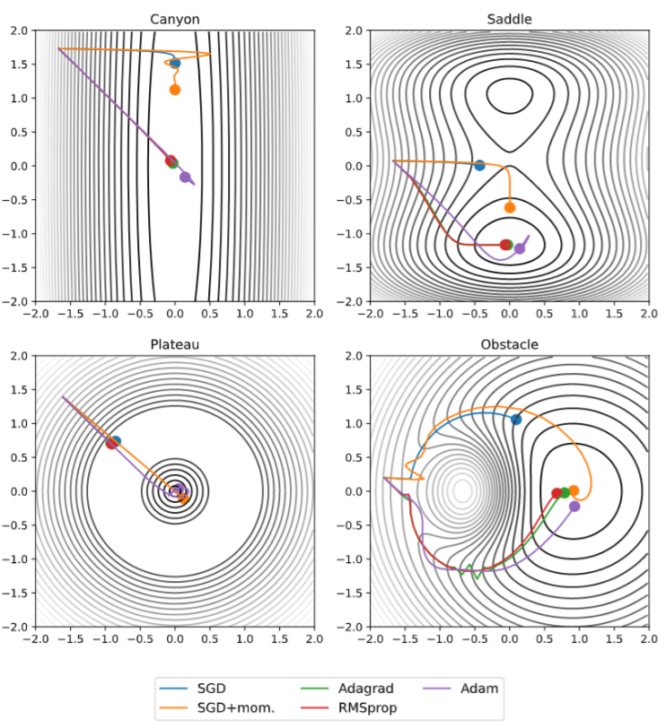
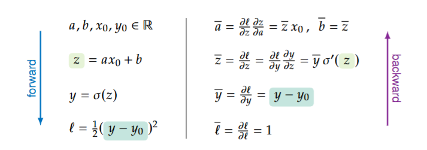
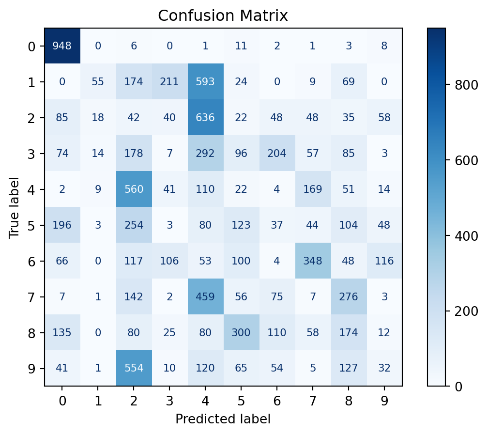

import torch
import torch.nn as nn
import torch.optim as optim
import torchvision
import torchvision.transforms as transformsTraining a Neural Network
In this section, we will train a neural network to classify images of handwritten digits from the MNIST dataset. We will use the PyTorch library to implement the neural network and train it using stochastic gradient descent.
Problem definition
Before we can train a neural network we need to define the problem we want to solve. Is it classification, regression, or something else? What is the input and output? What are their respective sizes? What is the loss function? How many layers and neurons should our network have?
Generally, the input size correlates with the number of features in the dataset. The output size is the number of classes we want to predict (classification) or the number of values we want to predict (regression). The loss function will also depend on the problem we are trying to solve. For classification, we can use cross-entropy loss, and for regression, we can use mean squared error loss. The number of layers and neurons in the network will depend on the complexity of the problem and the amount of data we have. A good rule of thumb is to avoid building a network with more parameters than the number of data points we have.
Optimization - Stochastic Gradient Descent
Now that we’ve defined the problem and the Network Architecture, we are ready to find the optimal weights, \(w^*\), that satisfy the optimization objective:
\[ w^* = \underset{w \in W}{\mathrm{arg\,min}} \sum_{i=1}^n L(y_i, F(x_i; w)) \]
In the case for Linear Regression, we can find an analytical solution, however this not the case for Neural Networks. We will need to use an optimization algorithm to find the optimal weights. The most common optimization algorithm used for Neural Networks is Stochastic Gradient Descent (SGD).
For simplicity’s sake, we’ll treat the weights as a vector as we’ve previously discussed we can flatten any tensor into a vector. We can do this for many tensors and concatenate them together to form a single vector.
Then, for SGD we need an initial guess for the weights, \(w_0\), and then iteratively update the weights using the following equation:
\[ w_{t+1} = w_t - \eta \nabla_w \left( \sum_{(x,y) \in \text{Batch}_t} L(y, F(x; w_t)) \right) \]
where \(\eta\) is the learning rate, which controls the step size of the update. This value is typically \(10^{-3}\). The gradient \(\nabla_w L(y_i, F(x_i; w_t))\) is the partial derivative of the loss function with respect to the weights, and it tells us in which direction to update the weights to minimize the loss.
The reason we call the alorithm Stochastic Gradient Descent is because we are only using randomly selected subset partitions of the data (called batches) to calculate the gradient. At every time step we use a different batch, \(\text{Batch}_t\). This is done to reduce the computational cost and also to avoid overfitting. Every time we update the weights we are using a different batch of data, which is why it is called stochastic. Once we’ve exhausted all the batches, we repeat the process with a new set of batches. This is called an epoch.
The learning rate, \(\eta\), the batch size (number of observations per batch), and the number of epochs are hyperparameters that we need to choose before we start training. These affect the performance of the model and the time it takes to train.
SGD Variants
SGD is a good starting point, but it has some limitations. One of the main problems with SGD is that it can be slow to converge, especially for deep neural networks. This is because the learning rate is the same for all weights, and it may not be optimal for all weights. There are other algorithms that try to address this problem.
Before we discuss these algorithms, let’s define \(g_t\) as the gradient at step \(t\) for the sake of consicion. \[ g_t = \nabla_w \left( \sum_{(x,y) \in \text{Batch}_t} L(y, F(x; w_t)) \right) \]
SGD with momentum
One thing that can help speed up convergence is to use a technique called momentum. Momentum speeds up training when consecutive gradients are in the same direction, and slows it down when they are in opposite directions. The formula is as follows:
\[\begin{align} v_t &= \mu\,v_{t-1} + \eta\,g_t \\ w_t &= w_{t-1} - v_t \end{align}\]
Where \(\mu\) is the momentum hyper-parameter.
Adagrad (Addaptive Gradient SGD)
Another technique that can help speed up convergence is to use a technique called Adagrad. Adagrad adjusts the learning process for each weight based on how much it has been updated. The formula is as follows:
\[ (w_{t+1})_i = (w_t)_i - \frac{\eta}{\sqrt{\sum_{k=0}^t (g_k)_i^2 + \epsilon}} (g_t)_i \]
We can simplify the formula if we assume all operations are performed component-wise:
\[ w_{t+1} = w_t - \frac{\eta}{\sqrt{\sum_{k=0}^t g_k^2 + \epsilon}} g_t \]
Where \(\epsilon\) is a small constant to avoid division by zero, typically \(10^{-8}\). When \(t\) is large enough, the learning process essentially halts.
RMSprop (Root Mean Square Propagation)
Another technique that can help speed up convergence is to use a technique called RMSprop. RMSprop adjusts the learning process for each weight based on the moving average of the squared gradients. By using a moving average rather than the sum, we can avoid the problem of the sum growing too large. The formula is as follows (component-wise):
\[\begin{align} v_t &= \alpha\,v_{t-1} + (1-\alpha)\,g_t^2 \\ w_{t+1} &= w_t - \frac{\eta}{\sqrt{v_t + \epsilon}} g_t \end{align}\]
Where \(\alpha\) is the another hyper-parameter, typically \(0.9\).
Adam (Adaptive Moment Estimation)
The final technique we will discuss is called Adam. Adam combines the best properties of the SGD with momentum, AdaGrad, and RMSprop algorithms to provide an optimization algorithm that can handle many optimization tasks. The formula is as follows (component-wise):
\[\begin{align} m_t &= \beta_1\,m_{t-1} + (1-\beta_1)\,g_t \\ v_t &= \beta_2\,v_{t-1} + (1-\beta_2)\,g_t^2 \\ \end{align}\]
\[\begin{align} \hat{m}_t &= \frac{m_t}{1-\beta_1^t} \\ \hat{v}_t &= \frac{v_t}{1-\beta_2^t} \\ \end{align}\]
Where \(\hat{m}_t\) and \(\hat{v}_t\) are the bias-corrected estimates of the moments and \(\beta_1\) and \(\beta_2\) are hyper-parameters, typically \(0.9\) and \(0.999\), respectively.The final update rule is:
\[\begin{align} w_{t+1} &= w_t - \frac{\eta}{\sqrt{\hat{v}_t} + \epsilon} \hat{m}_t \end{align}\]
The following image shows the optimization alorithms we discussed under some fabricated, but important optimization scenarios:

In the top 2 pictures, we can observe that SGD and SGD with momentum tend to run out of steam before reaching the minimum. We can also observe that under plateu scenerios, momentum is essentially needed thus, SGD with momentum and Adam are the only algorithms that can reach the minimum. However, this comes at a cost of possibly overshooting the minimum and gaving to backtrack, which we can observe with Adam in the top 2 pictures and SGD with momentum in the bottom right picture.
Each optimization algorithm has its own advantages and disadvantages, and the choice of algorithm depends on the specific problem and dataset. However, if no prior knowledge is available, Adam is a safe default choice.
Optimization - Automatic Differentiation and Backpropagation
Now that we have a Mathematical Algorithm for optimization, we need to find a way to compute the gradient of the loss function. Traditional approaches such as manually coding gradients, numerical differentiation, and symbolic differentiation are too computationally expensive and inefficient. Thus, we need to find a new way to compute the gradient of the loss function. This is where automatic differentiation and backpropagation come in.
For ease of notation, we will use the following simplified notation for partial derivatives with respect to the loss function:
\[ \overline{x} = \frac{\partial L}{\partial x}, \overline{y} = \frac{\partial L}{\partial y}, \overline{w} = \frac{\partial L}{\partial w}, \cdots \]
Let’s beign with automatic differentiation.The key of automatic differentiation is to break down each formula into basic mathematical operations, and then compute the gradient of each operation. For example, the gradient of the addition operation is simply the gradient of each operand. Consider the following scenario:
\[ L = \frac{1}{2} (F(x_0; a, b) - y_0)^2 = \frac{1}{2} \Big(\sigma(a\,x + b) - y_0\Big)^2 \]
We can break down this formula into the following basic mathematical operations:
\[\begin{aligned} a, b, x_0, y_0 \in \mathbb{R}, \\ z = a\,x_0 + b \\ y = \sigma(z) \\ L = \frac{1}{2} (y - y_0)^2 \end{aligned}\]Then we can find the gradient at each operation using the chain rule:
\[\begin{aligned} \overline{L} &= \frac{\partial L}{\partial L} = 1 \\ \overline{y} &= \frac{\partial L}{\partial y} = y - y_0 \\ \overline{z} &= \frac{\partial L}{\partial z} = \frac{\partial L}{\partial y} \cdot \frac{\partial y}{\partial z} = \overline{y} \cdot \sigma'(z)\\ \overline{a} &= \frac{\partial L}{\partial a} = \frac{\partial L}{\partial z} \cdot \frac{\partial z}{\partial a} = \overline{z} \cdot x_0 \\ \overline{b} &= \frac{\partial L}{\partial b} = \frac{\partial L}{\partial z} \cdot \frac{\partial z}{\partial b} = \overline{z} \\ \end{aligned}\]In reality, we only care about the gradients for \(a\) and \(b\), however, by calculating all gradients, the process is much more computationally efficient, easier to implement, and we can easily extend this to more complex functions.
One thing to note is that to compute the values it is more efficient to start with the more primitive values, and combine them until we get to the final value. This is called the forward pass. However, to compute the gradients, we start with the final value and propagate the gradients backwards. This is why we have the \(\overline{L}\) term in the first equation, as it is the starting point for the gradient propagation or backward pass, hence the overall algorithm is called backpropagation.
The following image illustrates the forward and backward passes for the above example. However, it uses \(\ell\) instead of \(\overline{L}\) to denote the loss function.

Optimization - Initialization
Vanishing and Exploding Gradients
Not all gradients behave nicely. For instance, if we have a sequence of sigmoid functions composed with each other:
\[ \sigma^{(n)}(x) = (\sigma \circ \sigma \circ \cdots \circ \sigma)(x) \]
It can be shown that the gradient of this function is bounded as follows:
\[ |\sigma^{(n)}(x)| \leq \frac{1}{4^n} \]
As such, very deep networks with sigmoid activation functions are prone to vanishing gradients. This means that the gradients of the weights in the earlier layers will be very small, and as such, the weights will not be updated much. This can make training very difficult. The opposite problem, exploding gradients, can occur when the gradients are too large. Both of these are problems that one needs to be aware of when training deep networks.
There are several ways to address these problems, such as carefully selecting activation functions, using gradient clipping, and initializing weights properly. This last one is the topic of this section.
Weight Initialization
The way in which we initialize the weights of a neural network can have a significant impact on the performance of the network. If the weights are initialized too large, the gradients can become too large and cause the network to diverge. If the weights are initialized too small, the gradients can become too small and cause the network to converge very slowly. Most importantly, if all the weights are initialized to the same value, they’ll never diverge and the network will not learn to it’s full potential. As such, it is important to initialize the weights of a neural network properly.
The most comon technique is to use a random initalization scheme, using either uniform distribution for it’s simplicity or normal distribution for it’s fundamental properties in probability. This then proposes a question, how do we choose the parameters of the distribution? We’ll show 2 different approaches to this problem.
The goal of this section is to find a way to initialize the parameters of the neural network such that the variance of the output of the neural network is equal to the variance of the input to the neural network.
Assumptions and Goal
There will be some assumptions that we’ll make in this section:
Identically distributed layers: We’ll assume that the layers of the neural network are identically distributed: \[\begin{align} \mathbb{E}[z^{(t)}_1] &= \mathbb{E}[z^{(t)}_2] = \cdots = \mathbb{E}[z^{(t)}_n] = \mathbb{E}_{z^{(t)}}\\ \operatorname{Var}(z^{(t)}_1) &= \operatorname{Var}(z^{(t)}_2) = \cdots = \operatorname{Var}(z^{(t)}_n) = \operatorname{Var}_{z^{(t)}} \end{align}\]
Centered distributions: We’ll assume that the distributions for both data and parameters are centered, meaning that the mean is 0: \[ \mathbb{E}_{z^{(t)}} = 0,\,\mathbb{E}[w_i] = 0\,\,\forall w_i \in w \]
Constant initial biases: Biases will be initialized to 0.
Constant Variances: Our goal will be for the variance of the weights to be constant with a value of 1.
These are some very restrictive assumptions, however, in practice, the following techniques work well even if the assumptions are not met. Data preparation can help make the assumptions more accurate if need be.
With these assumptions and goals in mind, we can take a look at the following Initialization methods.
Stochastic Initalization
Stochastic initalization tries to keep the overall variance between layers roughly the same:
\[ \sum_{Y\,\in\,z^{(t+1)}} Var(Y)^2 \approx \sum_{X\,\in\,z^{(t)}} Var(X)^2 \]
After several pages of mathematical derivation, this results in the following distribution candidates for the weights:
\[\begin{align} w_i &\overset{\mathrm{iid}}{\sim} \mathcal{Normal}\Big(0, \frac{16}{n}\Big) \\ w_i &\overset{\mathrm{iid}}{\sim} \mathcal{Uniform}\Big(-\sqrt{\frac{48}{n}}, \sqrt{\frac{48}{n}}\Big) \end{align}\]
However, this is only true if no activation is applied to the weights. If we employ the ReLU activation function, the distributions become:
\[\begin{align} w_i &\overset{\mathrm{iid}}{\sim} \mathcal{Normal}\Big(0, \frac{2}{n}\Big) \\ w_i &\overset{\mathrm{iid}}{\sim} \mathcal{Uniform}\Big(-\sqrt{\frac{6}{n}}, \sqrt{\frac{6}{n}}\Big) \end{align}\]
Xavier Initialization
Xavier initialization tries to keep the variance between layers roughly the same through both the forward and backward pass. For this lets focus on a single linear layer with the forward pass:
\[ z^{(t+1)} = W^{(t)} z^{(t)} + b^{(t)} \]
With the forward pass, the variance of the weights should be:
\[ Var(W^{(t)}_{ij}) = \frac{1}{n} \]
With the backward pass, the variance of the weights should be:
\[ Var(W^{(t)}_{ij}) = \frac{1}{m} \]
where \(n\) is the dimension size of the \(z^{(t)}\) and \(m\) is the dimension size of the \(z^{(t + 1)}\). However, unless \(n=m\) it is impossible for both of them to be true. A good compromise is the following:
\[ Var(W^{(t)}_{ij}) = \frac{1}{n+m} \]
However, this is once again only the case without activation functions. Adding an activation function will multiply the variance by \(\alpha^2\), where alpha is a constant that depends on the activation function.
| Activation Function | \(\alpha\) |
|---|---|
| None | 1 |
| Sigmoid | 1 |
| Tanh | \(\frac{5}{3}\) |
| ReLU | \(\sqrt{2}\) |
| Leaky ReLU | \(\sqrt{\dfrac{2}{1+(\alpha_\text{Leaky ReLU})^2}}\) |
As such the distribution candidates for Xavier initialization are: \[\begin{align} W^{(t)}_{ij} &\overset{\mathrm{iid}}{\sim} \mathcal{Normal}\Big(0, \alpha^2\frac{2}{n+m}\Big) \\ W^{(t)}_{ij} &\overset{\mathrm{iid}}{\sim} \mathcal{Uniform}\left(-\alpha\sqrt{\frac{6}{n+m}}, \alpha\sqrt{\frac{6}{n+m}}\,\right) \end{align}\]
There are other initialization schemes that are used in practice, such as He initialization and Glorot initialization. These are similar to Xavier initialization, but they use different formulas for the variance of the weights.
PyTorch
Now that we have a sufficient understanding of the necesary math to understand the training process, we can start to train our first neural network in PyTorch. For this, we’ll use the MNIST dataset, which consists of 28x28 pixel images of handwritten digits from 0 to 9. We’ll train a neural network to classify these images into the correct digit.
First, we need to import the necessary libraries and load the MNIST dataset:
# data preprocessor function
transform = transforms.Compose([
transforms.ToTensor(),
lambda x: x[:,::2,::2], # downsample image by factor of 2
transforms.Normalize((0.5,), (0.5,))
])
# Load the MNIST dataset
trainset = torchvision.datasets.MNIST(
root='./data',
train=True, # training set
download=True,
transform=transform
)
testset = torchvision.datasets.MNIST(
root='./data',
train=False, # testing set
download=True,
transform=transform
)Next, we need to define the neural network architecture. We’ll use a simple neural network with 2 hidden layers:
class MNISTClassifier(nn.Module):
def __init__(self):
super(MNISTClassifier, self).__init__()
self.layers = nn.Sequential(
nn.Linear(14*14, 128),
nn.ReLU(),
nn.Linear(128, 64),
nn.ReLU(),
nn.Linear(64, 10),
)
def forward(self, x):
x = x.view(-1, 14*14)
return self.layers(x)Now, let’s define some hyperparameters and initialize the neural network and optimizer:
# hyper parameter definition
learning_rate = 0.001
num_epochs = 50
batch_size = 64
# instantiate model
# this is the step where PyTorch initializes the weights
model = MNISTClassifier()
# define loss function
criterion = nn.CrossEntropyLoss()
# define optimizer (SGD algorithm)
optimizer = optim.Adam(model.parameters(), lr=learning_rate)
# create data loader (creates batches for SGD)
trainloader = torch.utils.data.DataLoader(trainset, batch_size=batch_size, shuffle=True)Finally, we can train the neural network using the training data:
# set model to training mode
model.train()
# training
for epoch in range(num_epochs): # loop over the dataset multiple times
for images, labels in trainloader: # loop over dataset in batches
# predict
outputs = model(images)
# compute loss
loss = criterion(outputs, labels)
# Backward and optimize
optimizer.zero_grad() # prepare object for backpropagation
loss.backward() # compute gradients (backpropagation)
optimizer.step() # update weights (Adam)Observe that PyTorch implements and hides all the previously discussed theory. While not necessarily necessary to understand the underlying theory, it is helpful to have a good understanding of the concepts in order to troubleshoot and optimize your models.
Now, let’s take a look at test confusion matrix and accuracy metrics.

Accuracy: 0.1502This isn’t the best result but it’s better than random guessing. The model became really good at identifying the 0s, and guessed most everything else as a 2, a 4, or some other wrong answer. Unfortunately, Multi-Layer Perceptrons are not very good at classifying images, especially when the images are not very clear. We also had to subsample the images to make them smaller, which significantly reduced the number of parameters (good), but also reduced the quality of the images. The subsampling step will be justified in the Good Practices for Neural Networks section, which comes next. For a better image classifier, we would need to use a Convolutional Neural Network (CNN), which will be discussed right after.